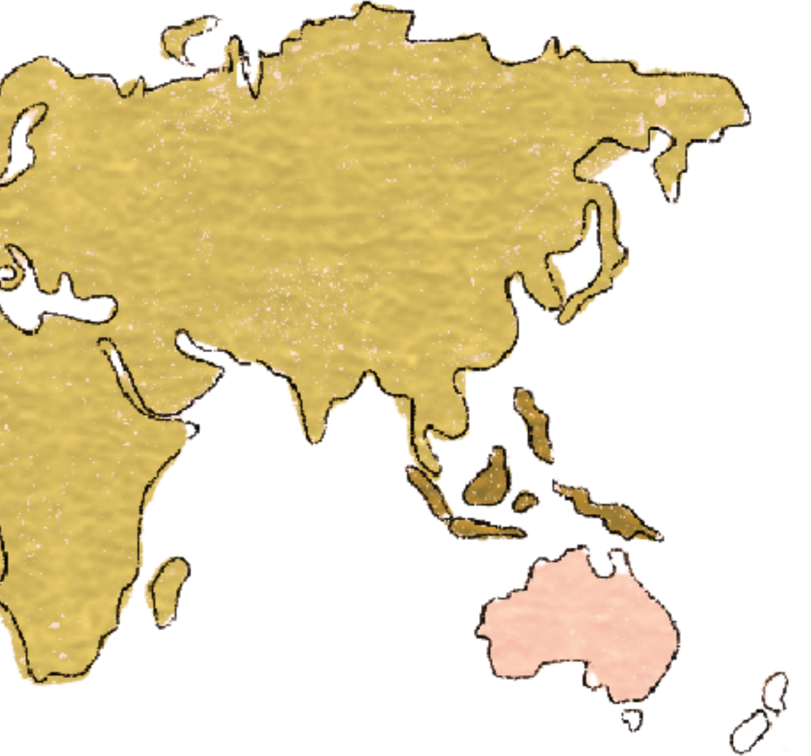

——— 2020-2024
Bachelor · Chinese Language and Literature
Driven by my longstanding passion for language, literature, and culture, I chose Chinese Language and Literature as my undergraduate major. I believe that language is far more than a means of communication, it is a powerful medium that carries history, culture, and human thought across generations.
——— 2025-2026
Master of Media Practice
During my undergraduate studies, I began to realize that communication was no longer limited to written texts. As short-form videos, social media, and digital platforms became increasingly influential, I became fascinated by how stories could be conveyed through a combination of visuals, audio, and interactive media. I wanted to learn not only how to analyze content but also how to create it. This motivation led me to pursue a Master's degree in Media Practice.
Educational Background